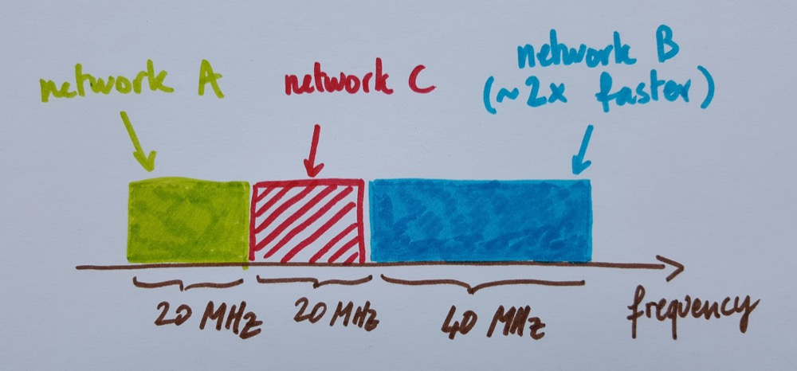

How Future Wi-Fi Networks Should Use Spectrum and Time
As technology makes progress, the mechanism used by Wi-Fi to avoid packet collisions is becoming more and more inefficient. In some cases, it can waste more than 90% of potentially-available throughput.
In this article, we describe a possible extension of this collision-avoidance mechanism, which could enable future Wi-Fi devices to use spectrum and time much more efficiently. Compared to recent Wi-Fi amendments, the proposed mechanism can increase throughput by more than 5 times, reduce the number of lost packets and significantly decrease the latency experienced by network traffic.
Introduction
Wi-Fi networks are typically composed of an access point and some computers/phones/tablets/... connected to it. In the following, we call device any such piece of equipment that is using Wi-Fi. In general, interference can happen in the form of collisions (understand: lost data packets) if two nearby devices (which may or may not belong to the same network) transmit at the same time and on the same frequency.
To limit interference, the collision-avoidance mechanism used by Wi-Fi tries to avoid that two devices transmit at the same time, by having them wait for some random durations before they attempt a transmission. The problem is that it wastes an amount of time that becomes disproportionately large as Wi-Fi transmission speeds improve and transmission durations decrease.
A solution could come from extending this mechanism to also avoid that two devices transmit on the same frequency. This would enable drastic throughput gains, because if devices operate on different frequency bands they can transmit more continuously over time. Unfortunately, Wi-Fi networks currently manage frequency bands in a poor way, mostly because they adapt their channels very slowly, if at all. This wastes spectrum and renders a more efficient time-domain strategy unfeasible.
Managing spectrum efficiently requires an additional piece of logic for the devices to choose the frequency band to use for each transmission. This is challenging, because in general neighboring devices don't know about each other, yet in this case they would need to make fast and coherent decisions in a completely uncoordinated fashion.
In this article, we first explain how current Wi-Fi networks operate and what are the main performance drawbacks (Section 2 and Section 3). We then present our proposed mechanism to use time and frequency more efficiently (Section 4 and Section 5), and give a rapid overview of the performance gains (Section 6).
How Wi-Fi Currently Works
Frequency Domain
Wi-Fi devices use radio waves and have the ability to use different frequency bands (or channels). In addition, recent Wi-Fi standards, such as 802.11n and 802.11ac, make it possible for Wi-Fi devices to combine several channels together to use a larger, wider frequency band. The combined channel width can go from 20 MHz (equivalent to one traditional channel) to 160 MHz (eight channels together). Without interference, the maximum achievable transmission speed is then usually roughly proportional to the total channel width. Said differently, the time required to transmit a given amount of data is roughly inversely proportional to the channel width.
We can illustrate this with a picture:
An option to limit interference is to make neighboring Wi-Fi devices transmit on different frequency bands. Most commercial access-points come with an "auto-channel" option, which allows them to scan the surrounding spectrum and select a channel on which to operate. This is useful, but it's not enough:
- In many populated areas, the number of access points usually far exceeds the number of channels, which often makes it impossible to find a "free" channel.
-
Newer devices using large channel widths further worsen this channel exhaustion problem, because using a large channel width makes it difficult to find a large-enough free chunk of spectrum.
Therefore, trying to minimize interference incentivizes newer Wi-Fi devices to use only small channel widths (e.g., 20 MHz), which drastically limits their transmission speed:

Fig 2. - There is only 20 MHz of free spectrum remaining for network C, so an auto-channel mechanism would make network C use a channel width of 20 MHz (even if it is capable of using more).
- These channel-assignment mechanisms select channels at slow timescales -- typically between once every few minutes to once every few days. This is much slower than the timescales at which traffic varies in packet-switched networks, which can be in the order of a few milliseconds. This mismatch can lead to a lot of spectrum wasted because most Wi-Fi networks are not actively used 100% of the time. For example, in the figure above, when network A or network B stop transmitting for a while (because, for instance, a user is generating intermittent traffic spikes by browsing the web), network C could immediately re-use the vacant spectrum and switch to a larger channel width to increase its throughput. In fact, despite the presence of auto-channel mechanisms, Wi-Fi essentially treats spectrum as a reserved resource, which goes against principles of packet-switched networks.
Time Domain
Even when using fixed channels, the amount of available spectrum is limited and several devices often have to share common frequency bands. To limit interference in these cases, Wi-Fi uses CSMA/CA (Carrier Sensing Multiple Access with Collision Avoidance):
- When a device needs to transmit a packet, it listens on its spectrum band to know if there is already an ongoing transmission. If there is, it remains silent (this step is the "CSMA" part).
- When the device does not sense any ongoing transmission, it waits for a random number of time slots (on average 8), and then attempts a transmission.
- If the device receives no acknowledgment from the receiving end after a transmission, it assumes the packet has been lost in a collision. Collisions can happen if two devices start transmitting at the same time (thus without having a chance to sense each others transmission) and their packets' signals are received concurrently by a receiver. In this case, the transmitting device doubles its average waiting time (so it is equal to 16 time slots, then 32, etc), it waits for a new randomly-selected duration, and then attempts to transmit the same packet again (these two steps are the "CA" part).
CSMA/CA:
- Overhear what happens and don't interrupt an ongoing transmission;
- If your transmission didn't succeed, wait longer (on average) before trying to re-transmit again;
CSMA/CA does a good job at avoiding collisions because it is unlikely that two devices select exactly the same number of time slots to wait (which is the condition for a collision to happen). If a collision does happen, the devices double the average number of time slots they wait, which further reduces the probability of any two devices picking exactly the same time slot for transmission, and so on.
An especially important aspect is that CSMA/CA synchronizes transmissions relatively well even though concurrent devices know nothing about each other. This aspect has been fundamental for the success of Wi-Fi: there is no need for complex configuration or existing infrastructure. Anyone can turn on a Wi-Fi device anywhere and it will implicitly organize its transmissions with neighbors to avoid collisions.
The figure below gives a few more details on what a typical transmission with CSMA/CA looks like:
The Problem with Current Wi-Fi Networks
Although it is simple and robust, CSMA/CA introduces some inefficiencies because devices need to wait a certain number of time slots before they transmit. With older standards such as 802.11b/g/a, this waiting time used to be small compared to the time it took to transmit a typical packet, so the cost was not high. The problem is that newer standards are faster, partly thanks to the use of larger channel widths. As a consequence, they take less time to transmit a packet. In contrast, the overhead durations have not been proportionally reduced, mostly because of physical limitations -- time slots need to be long enough to account for signal propagation delays, and signals cannot travel faster than the speed of light.
As a result, the ratio of time spent doing useful transmissions over the time spent waiting becomes vanishingly small as technology progresses:
On the figure below, we show this ratio as a function of the transmission speed (for 802.11b/g/a/n/ac standards), for a few packet sizes:
Of course, standardization committees knew about this issue, and the current solution is to increase packet size. This solution works to some extent. For instance, with a transmission speed of 600 Mbps, sending packets of 10 kB instead of 1 kB increases efficiency to about 45%. For 802.11ac, the standard allows devices to send packets with size up to 4.5 MB. The problem, however, is that sending large packets is not always possible because it assumes that a large amount of traffic is readily available for transmission at any time. Unfortunately, this is not the case for many different kinds of traffic. For example, web sessions are inherently bursty (they generate small amounts of data very frequently). For such sessions, waiting for 4.5 MB (or even 10 kB) of traffic to buffer before sending a packet would introduce prohibitive delays. The same problem exists for voice and video traffic, online gaming, etc. Overall, there is something frustrating with this approach because it might require to trade delay for throughput. Instead, the mechanism we propose next can increase efficiency without increasing packet sizes.
What Ideal Configurations Should Look Like
Let us summarize the two main drawbacks of current Wi-Fi:- Treating spectrum as a reserved resource implies that there are points in time where devices use less spectrum than they could.
- CSMA/CA is good for avoiding collisions, but the time spent waiting before transmissions becomes prohibitively large as transmission durations decrease.
In order to understand the kind of solutions we should target, let's first describe what would be an ideal allocation of frequency bands when there are N active devices at some point in time:
- When N=1, there is only one active device and it should use the largest possible channel width, because this is the frequency configuration offering the largest throughput. In this configuration, the device can also adopt a different time-domain behavior: since it is the only active device, it does not need to be so "polite" and wait on average 8 time slots before transmitting its packets. Instead, it can be much more "aggressive" by waiting much less before each packet.
-
When N=2, the two active devices should split the spectrum in two parts, in order to separate their transmissions in the frequency domain. This has two advantages:
- Using smaller channel widths increases transmission durations, which in turn amortizes the overhead due to waiting. Note, however, that using a small channel width is good only when the full spectrum is filled (i.e., when N > 1). Otherwise, this gain is outweighted by spectrum waste.
- Operating on separate frequency bands means that the devices can remain aggressive in the time domain -- again they don't need to be too polite and try to let others talk if they are alone on their frequency band.
- This reasoning can be extended to 2 ≤ N ≤ 8. In these cases, the ideal configuration is for the devices to operate on smaller frequency bands. This is all good, because as the channel widths get smaller, transmission durations increase, which further increases overall efficiency.
- When N > 8, some devices have to share some frequency bands, because there are only 8 smallest bands. In this case, this means that the devices cannot afford to be too aggressive in the time domain (they need to let others talk), and should fall back to waiting the usual 8 time slots on average before transmitting a packet. That's OK though, because when the devices use narrow channel widths, the overhead due to waiting is still drastically reduced.
CSMA/CA in Time and Frequency Domains
Proposed Mechanism
Now that we know what good configurations look like, we are ready to address the question of how to find them in a simple CSMA/CA-like style. This is especially challenging, because:
- Dynamic traffic means that in practice the number N of active devices changes all the time and is unknown to the devices. As a consequence, they don't know which of the above ideal configuration they should target.
- The devices don't know anything about each other. The only information they have is whether their packets experience a collision or not. This means that they need to self-organize in order to find their right configuration.
Overall, the devices should modulate their frequency-domain aggressiveness (via the channel width) to make it commensurate to the number of surrounding active devices, without knowing this number. The key idea to make this work is to observe that the collisions or successful transmissions experienced by the packets give devices the following information:
- A collision indicates that the device is not operating alone in its spectrum band and should thus seek a different spectrum band. If many collisions happen, it means that the device may be using too much spectrum to be able to find a free spectrum band, and it should thus reduce its channel width. This reasoning is the frequency-domain equivalent of the reasoning followed by CSMA/CA in the time domain to increase the number of waiting time slots.
- Repeated successful transmissions is a signal that the device is likely to be alone in its frequency band. It should thus remain in this band and, occasionally, increase its channel width in order to reclaim some potentially-vacant spectrum.
TF-CSMA/CA:
- Overhear what happens on your current frequency band and don't interrupt an ongoing transmission;
- If your transmission didn't succeed, switch to a different channel and divide your channel width by 2 with some probability β before trying to transmit again. Also increase the average number of time slots to wait before transmitting;
- After a successful transmission, keep using the same band but double your channel width with some probability α.
We call this algorithm TF-CSMA/CA (standing for CSMA/CA in time and frequency domains).
At first sight, it seems that devices keep changing channels and channel widths all the time, and that they can sometimes make bad decisions by doing so. How can we know that this is self-organizing? The key intuition here is that for right values of the probabilities β and α the devices spend on average long durations in good (understand: close to ideal) configurations. It is possible to mathematically prove this property, and get good values for β and α in the process. In fact, β should depend on the channel width being used -- we refer the interested reader to the technical paper for more details, but we give an example below that should help understand this point.
An Example with Two Devices
Let's see now how this would work out in a simple case where there are two neighboring devices A and B, each starting out using the largest possible channel width. For simplicity, let's say that this channel width is 160 MHz (as for 802.11ac) and that there is only 160 MHz of usable spectrum in total. In this case, because the neighboring devices send their packets nearly back-to-back, a collision will quickly happen (if it doesn't, it means there is no problem -- for instance the devices are too far appart to really interfere). After a collision, both devices reduce their channel width with probability β. Let's assume here that β = 1 when the devices use the largest channel width (this is actually the optimal value for β in this case). Both devices would thus reduce their channel width to 80 MHz and randomly switch to a different frequency band (within the large 160 MHz band). If they divide their channel width by 2 and choose their new frequency band uniformly at random, there are four different ways this can play out, each with a probability of 0.25:
Using this figure, we can see that we have the following configurations:
- With probability 0.5, both networks end up on the same 80 MHz half of the spectrum.
- With probability 0.5, the networks end up on different 80 MHz halves of the spectrum.
In contrast, assume now that one of the two devices stops transmitting (for instance because it is done downloading a file). Then, the spectrum is under-utilized only for an average duration of 1000 packet transmissions (that is, until the other device increases its bandwidth again, which happens with probability α after each packet transmission). Considering the durations of packet transmissions, this means that spectrum is under-utilized for typically less than a second. This is to be contrasted with the timescales of spectrum under-utilization with current auto-channel algorithms, which are typically days!
Slightly More Details on this Example (can be skipped):
It is possible to model the above simple example (with two devices and only two channel widths, in the general case where β ≤ 1) as a Markov chain with four states A, B, C and D, where each state represents one of the four configurations shown on Figure 7 (note that now the letters A, B, C and D represent a global frequency-allocation pattern across all devices):
For this model, it is easy to show that the two devices spend an arbitrarily large fraction of the time in the ideal configuration D when α is small enough. This result can also be extended to more general configurations with N > 2 devices.
Time-Domain Behavior
Now, the fact that devices spend most of their time in good frequency bands similar to what is shown on Figure 6 is great, because it enables us to configure the algorithm to be much more aggressive in the time domain. Here, we can simply select the average number of waiting time slots as a function of the current channel width. When a device uses the largest channel width (e.g., 160 MHz for 802.11ac), it is likely the only active device around, and waiting only for 1 time slot on average is enough. Then, when the devices use smaller channel widths, it can indicate that there are other devices around. In these cases we recommend using an average number of time slots inversely proportional to the channel width. In our 802.11ac example, this would mean an average of 2 time slots at 80 MHz, 4 time slots at 40 MHz and 8 time slots at 20 MHz. Note here that increasing waiting time at smaller channel widths does not impact performance much, because smaller channel widths increase transmission durations anyway.
Evaluation
Performance
We now measure the performance for TF-CSMA/CA and three other techniques:
- 802.11: Wi-Fi using the full spectrum band (160 MHz) and the default CSMA/CA mechanism to avoid collisions;
- Optimal TDMA: This is the performance obtained when all devices use the full spectrum band, but without the inefficiencies of the backoff mechanism of CSMA/CA. It's what we would obtain if there were a magical hand organizing transmissions in a perfect fashion in the time domain;
- Optimal spectrum: This is the performance obtained when the devices use Wi-Fi with the default CSMA/CA, but the optimal assignments of frequency bands shown on Figure 6.
When N = 1, TF-CSMA/CA is about 50% faster than Wi-Fi and comparable to optimal TDMA. In this case, the gain is due only to the reduction of waiting durations from 8 time slots to 1 time slot on average. When N increases, however, the throughput can be increased more than 5 times. The larger increase for larger N is due to the use of smaller channel widths, which drastically increase efficiency by increasing transmission durations.
Self-Organization
Finding good frequency bands involves solving a tradeoff: on one hand, using small channel widths makes it easier to find free frequency bands. On the other hand, using small channel width may under-utilize spectrum as a whole. In order to quantify how TF-CSMA/CA addresses this tradeoff, we define two quantities:
- Spectrum usage: Fraction of total spectrum used by at least one device;
- Interference: Fraction of total spectrum used by more than one device.
Originally, both spectrum usage and interference are high, because all devices use the full spectrum. Quite remarkably, the devices self-organize very quickly (within about 50 milliseconds) and reach configurations that produce almost no interference, while still using about 70% of the spectrum. TF-CSMA/CA pays a small inefficiency price by slightly under-utilizing the spectrum. However, as shown on Figure 9, this is largely compensated by drastic gains in the time domain, mainly via the use of smaller channel widths.
Other Performance Considerations
We refer the reader to the technical paper for more details and performance results. Some additional results include:- The devices select on average channel widths proportional to 1/N, even though they do not know N.
- TF-CSMA/CA improves fairness, in the sense that transmission opportunities are better spread among all devices, which reduces variation of packet delays.
- TF-CSMA/CA reduces the absolute number of collisions, mainly because devices mostly operate on separate spectrum bands. This can be helpful to TCP, which is especially sensitive to packet loss.
- There are also drastic performance gains when the traffic is dynamic and rapidly varying.
Conclusions
We have presented TF-CSMA/CA, which is a simple extension of CSMA/CA to the frequency domain. Using only information about their packets' collisions or successes, the devices can organize themselves to use efficient frequency bands and quickly react to varying traffic conditions. Algorithms of the flavour of TF-CSMA/CA will be enabled by new emerging capabilities of hardware, which allow devices to easily switch their frequency band on a per-packet basis. Overall, we think that this kind of algorithms represent a natural way to depart from today's view of spectrum as a reserved resource, which will drastically increase the performance of future Wi-Fi networks.